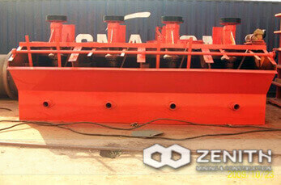
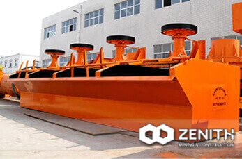
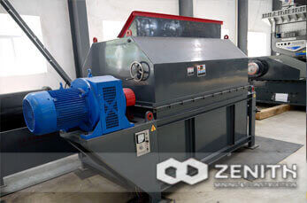
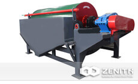
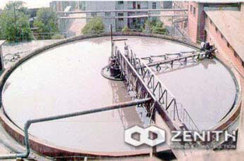
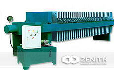
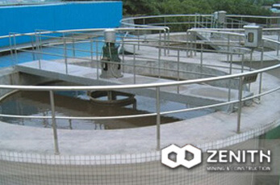

-

FL Spiral Classifier
Zenith FL spiral classifiers are widely used for separation plant They can be combined with ball mill to form a closed circuit for preliminary classif.
-

FX Series Hydro-cyclone
Hydro-cyclone is a kind of equipment for classifying the ore pulp by use of centrifugal force. It has no motion and dynamic parts,and needs to be.
- 
SF Series Flotation Cell
SF series flotation cell can imbibe the air and ore pulp spontaneously, with a fore-raking tank not liable to precipitation into the tank but.
- 
BF Series Flotation Machine
BF series flotation machine is improved from SF series but it is mainly used for iron ore and some other large proportion minerals. It imbibe the air.
- 
CTL Series Dry Magnetic Separator
CTL Series Dry Magnetic Separators are simple in terms of structures. They can be simply installed at the head of belt conveyors. They can also work a.
- 
Low Intensity Magnetic Separator<
CT Series Wet Magnetic Separators consist of separator drum, magnetic system, separator tank, transmission device and overflow devices for feeding.
-

XCF/KYF Series Flotation Machine
Model XCF and KYF are enforced aeration flotation machine, and widely used for nonferrous metals, ferrous metal, and non-metallic minerals.
- 
GX High Efficiency Thickener
Our GX series high efficiency thickener is similar with our center drive thickener. Its main characteristic is adding the flocculant to the slurry.
-

NZ Center Drive Thickener
Our NZ thickener is applicable for small scale thickening. The diameter of our NZ series thickener is under 20m. The thickeners with a diameter less.
- 
XAMY Series Filter
Our XAMY series filters are mainly used in chemical, pharmaceutical, metallurgy, oil, light industry, ferrous metallurgy, ore flotation, mining and.
-

LL Spiral Chute
Spiral chute is a type of new gravity separation equipment, which is applicable to separate metallic minerals granularity between.
- 
NG Peripheral Traction Thickener
Our thickener is applicable for dewatering headings and tailing in the separation plant. It can improve the ore pulp from 20~30% to approx.